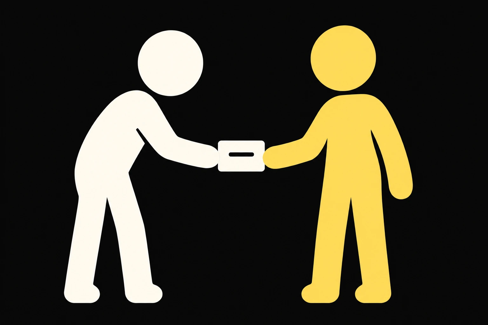

Your life audit,
people included.
For people used to doing it alone. See where things stand, and who knows what you’re working towards.
About 8 minutes, free.
The people around
your goals.
A few of the circle questions. Answer for the last 4 weeks.


The audit asks about this, too. Your circle read comes from your answers.
Your life in 8 areas.
8 areas and 5 parts, with about 52 answers, most of them a single tap.
Work and direction
Money
Health and energyLearning and growth Rest and enjoyment
Rest and enjoyment
Home and everyday life
Meaning and contributionA quick question about what brought you here, then:
- 1
Where things are
Situations from the last 4 weeks.
- 2
How it’s going
A one-word check after each area.
- 3
What matters this quarter
Pick up to 3 areas.
- 4
Who’s in it with you
The people around your goals.
- 5
Your one thing
A goal, a first step, a day and who sees it.
Your goal can
have company.
Your answers and wheel stay private by default. Choose the people who see your commitment. Include your wheel only if you want to.

My one thing
Reconnect with one person each week
Your wheel and
your circle read.
A picture of where things stand, the people around your goals, and one thing you choose to do next.
Relationships
You marked Relationships as important this quarter. Of those areas, this is where your answers were lowest.
The quiet planner
You have been keeping a goal quiet until you can do it for sure. Someone being able to name a goal you are working on was less like you.
Reconnect with one person each week
Write the names of 4 people you miss and message the first one today.
Your wheel, suggested focus and one area read are free to see. First name and email open the rest of your result.
The method
behind your wheel.
A reflection tool, built from your answers.
It isn’t a clinical or validated test.
Work kept eating into my personal time.
The last 4 weeks
Each area combines 4 statements with your one-word check. Answers about a cost are reversed before averaging.
Skipped areas stay missing
Skip an area if you want. Fewer than 3 answers leaves a gap in your wheel.
Your choice comes first
We suggest the lowest reading among the areas you said matter this quarter. You can choose any area.
A separate circle read
The people questions describe patterns from your answers. They don’t change the wheel. There’s no overall life grade.
The life audit
details.
Is the life audit free?
Yes. You see your wheel, suggested focus and one area read before sharing any details. Your first name and email open the rest, including your circle read and goal.
Do I have to share my result?
No. Your result starts private. You choose whether to share a commitment and whether your wheel goes with it.
Can I take it on my own?
Yes. You don’t need a circle to start, and nobody is contacted. The people questions help you look at who already knows about your goals.
What if an area doesn’t fit?
Skip it. It stays missing in your wheel. The audit won’t fill it in for you.
Work and direction, the last 4 weeks
I moved forward on work I actually care about.
Think about the past 4 weeks. Tap how much each statement sounds like what actually happened.
First-question preview. Your answer stays on this page.